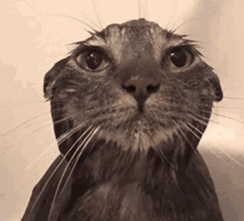

淋濕貓
大雨突降，小貓躲閃不及，全身濕透，瑟縮在門口發抖。主人發現後，輕輕抱起，用毛巾擦乾，放在暖爐旁，小貓眨眨眼，舒服地蜷成一團，喉間發出滿足的呼嚕聲，雨聲彷彿也變得溫柔了。
大雨突降，小貓躲閃不及，全身濕透，瑟縮在門口發抖。主人發現後，輕輕抱起，用毛巾擦乾，放在暖爐旁，小貓眨眨眼，舒服地蜷成一團，喉間發出滿足的呼嚕聲，雨聲彷彿也變得溫柔了。
夜色微醺，音樂輕響，小貓站在月光下，輕盈轉圈，尾巴優雅地擺動。主人驚喜地拍手，小貓更歡快地跳起來，像個小舞者般旋轉。燈光映照，它的影子也跟著舞動，彷彿在和星星共舞。
小貓不小心打翻花瓶，水漬灑滿地板。主人皺眉責備，它垂下耳朵，委屈地縮在角落，眼裡閃著淚光。夜深了，主人輕嘆，輕輕將它抱起，小貓愣住，隨即滿足地蜷縮進熟悉的懷抱裡。
小貓的罐頭被狗搶走了，它炸毛瞪眼，尾巴甩個不停，喉間發出低低的嘶吼。狗搖著尾巴無辜地看著它。主人遞上新的罐頭，小貓哼了一聲，傲嬌地轉過頭，卻忍不住偷偷舔了一口。